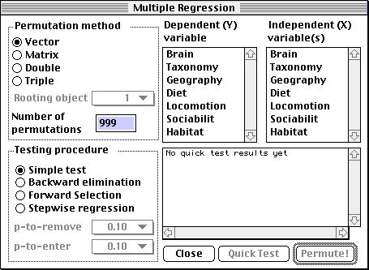
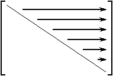
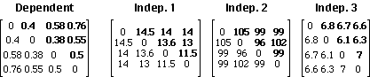

Permute! version 3.4 alpha 9
User's manual
Multiple regression over distance, ultrametric and additive matrices with permutation test
Last revision: Saturday, March 30, 2013
Download it here
Important
Permute! 3.4 is a major update to the Permute! 3.2 program, despite the small change in version number. It has been made easier to use, faster and more error-tolerant. Hopefully you will find this program to be highly usable, much more than the previous version.
This is alpha software, which means it is usable and the feature list is almost complete but not totally implemented.
What does Permute! do?
This program computes a multiple regression of one or more independent variables over one dependent variable, and assesses the probability (p-value) of the regression coefficients and the associated R2 (R-squared) using a permutational method described in Legendre, Lapointe and Casgrain (1994). It also allows the user to select the variables that contribute most to the variation through several procedures: backward elimination, forward selection and stepwise regression.
The program is remarkable in its use of appropriate permutation methods. If the variables represent distance matrices, ultrametric or additive trees, the permutation method accounts for it by generating a permuted distance matrix or tree.
How to use the program
Keeping with the philosophy of Macintosh programs, the author assumed that users do not like to read manuals. Hence the program's interface is as self-explanatory as possible, and has balloon help throughout. However, it assumes that the user is familiar with the contents of the Legendre, Lapointe and Casgrain (1994) paper, or at least with the concepts of multiple regression.
To start the program, double-click on the icon. From the "File" menu, choose "Open..." and select your input file (see below for the file's format). You can also drag your input file and drop it on the program's icon. After a short delay, your file should appear in its own scrollable and resizable window, to show you what the program has read. You can then be sure that the program read your data file correctly.
Note
The program has no way of knowing if your data file is corrupt. You should at least make a visual check on your data to ensure it has been read correctly.
About threads...
Starting with version alpha 2, the program is multi-threaded, allowing the user to run multiple, concurrent analyses and background tasks. This requires the Thread Manager, part of System 7.5 and later. You can also get an extension for earlier systems. The 68k and PPC versions will be multi-threaded if the Thread
Manager is present.
When at least one data file has been read, the File menu's "New analysis" item is enabled. Choosing it will cause the "Multiple regression" window to come to the front of the screen. If you have opened more than one data window, the multiple regression will be carried out for the topmost data file. The multiple regression window looks like this:

The names of the variables will be different for your own data file.
The features of this window are as follows:
- Permutation method
- As discussed in Legendre, Lapointe and Casgrain (1994), there are three ways of permuting a distance matrix. Here, a fourth case (the simplest one) is added. If Y represents
- A vector of values, with no matrix-like (distance) structure embedded: select "Vector". The values of the dependent variable will be permuted totally at random. This option may be used, for instance
- to test the behavior of the permutation tests of significance against standard multiple regression software, all possible permutations being equally likely, or
- to test multiple regression done on variables that do not meet the distributional assumptions of the standard parametric tests used in multiple regression, or else
- when your variables have no particular structure to them, e.g. they are simply a list of n values measured at n stations.
- A simple distance matrix (not a dendrogram or phylogenetic tree): select "Matrix". The rows and the columns of the original dependent distance matrix (Y) will be permuted at random in the manner of the Mantel test.
- A dendrogram (ultrametric tree): select "Double" (Lapointe and Legendre, 1991).
- A phylogenetic (additive) tree: select "Triple" (Lapointe and Legendre, 1992). In this case, you will need to indicate which object is the "Rooting Object" in the popup menu. This is necessary in order for the program to extract the star tree that forms the additive component of the phylogenetic tree.
- Number of permutations
- The number of times you want to randomize the Y variable under the null hypothesis. In a preliminary analysis, 99 is probably a good choice. However, for publication of results, 999 or more are recommended. Notice that we recommend "99", not "100". This is because the original coefficients are counted as equivalent to the results of a first permutation, as recommended by Hope (1968), bringing the total number of permutations to a round power of 10. This facilitates interpretation of the associated probabilities.
- Dependent (Y) variable
- A standard Macintosh list used to choose any one variable to be used as the dependent variable in the regression. This is the variable that will be permuted during the test. The list of variables is found in the first line of your data file, as discussed in input file format below.
- Independent (X) variable(s)
- Choose one or more (by clicking and dragging) from the list. You may easily select any combination of independent variables selections by using the Command key (Apple key, left of the space bar) as in any Macintosh list.
- Testing procedure
- The program allows to do four types of regression tests:
- The first one, dubbed "Simple test", computes the regression coefficients (b's) of the selected variables (see below), permutes the data according to the permutation method you selected, and re-computes the regression coefficients k times, where k is the number of permutations.
- Backward elimination procedure
With this procedure, all the user-selected variables (see below) are initially included. The permutation test is conducted, and at each step the independent variable whose partial regression coefficient has the highest p-value is dropped, provided that this probability is also higher than a predetermined and Bonferroni-corrected p-to-remove value, which the user must select from the popup menu
- Forward selection procedure
This procedure is based on the fact that a variable should be included in the model if (a) it gives the equation with the most significant R2 (Sokal and Rohlf, 1981) and (b) its b coefficient is significant at the Bonferroni-corrected p-to-enter level.
A forward selection procedure can be defined as follows: at each step, the independent matrix-variable is entered that produces the equation whose R2 coefficient has the lowest probability, provided that this probability is also smaller than or equal to a predetermined Bonferroni-corrected p-to-enter value. This variable's b coefficient must also be significant at the p-to-enter level, again pending approval through Bonferroni's correction. If a tie occurs in the permutational probabilities, the value of the increment in R2 is used as an additional selection criterion. Notice that we cannot use here the forward selection criterion based on the variable with the highest partial correlation, which is computationally simpler and is, in ordinary regression, equivalent to the one used here, because the relation between the values of the partial correlations and their associated probabilities may not hold, due to the special ways the permutations are performed in matrix regression.
The user must also select a p-to-enter value.
- Stepwise regression
This procedure is a combination of the backward elimination and forward selection procedures. It consists in a forward selection where each forward step (at the p-to-enter level) is followed by a backward elimination (at the p-to-remove level), assessing the significance of all variables already entered in the model.
Unfortunately, stepwise regression is broken in the current version of Permute!, and the author does not have enough free time to go back and fix it. However, a forward selection followed by a backward elimination of the selected variables should provide a reasonable facsimile of a stepwise regression.
- Close button
- Closes the Multiple regression window
- Quick test button
- When you have selected your variable(s), you can press this button to see a summary (in the small window above) of regression coefficients (b, t-values and one-tail p-values). Note that these p-values are parametric, which means that they were obtained using an F table. They are for information only, since they were not computed through permutations. Still, they can help you make quick decisions. These probabilities should be identical to the values given by other statistical packages which do not use permutation methods.
You can Select All in the Edit menu to select the Quick Test's results, which can then be copied to the clipboard as tab-delimited text.
- Permute! button
- Press this button (or the "Enter" key) when you are ready to start the permutation test(s). Tip: if you also press the "Option" key while pressing this button, the computer will display start, end and total time for the run.
Test results
Test results are shown in a scrolling window. Currently, the program does not respond to user input while it is performing the computations. This will change in future revisions, but for now it means that exploratory analyses should be done with a limited number of permutations (e.g. 99 or 49, even 24 if the dataset is large). A good indication of the time needed to compute one permutation is to press the "Quick test" button and see how much time is necessary for the results to appear. Multiply that time by the number of permutations and you have an indication of the total time needed before results start to appear.
The "Test results" window may be scrolled back and resized as desired. A run may have as many windows as the computer memory allows. You can copy the results to the clipboard (Edit menu... Copy), save them to a file (File menu... Save) and print them. There is a limit of 32,000 characters on the results window, the earlier characters being flushed as needed. In practice this limit is unlikely to be encountered, but the author is aware of the situation.
Although the computations are based on distance matrices, the program uses a clever scheme to simulate matrix-like behavior in vectors, in order to maximize memory usage, using some properties of symmetric matrices. If "A" is a distance matrix, and i and j are integers, the following will be true:
A(i,i) = 0
A(i,j) = A(j,i)
Therefore, the only unique part (i.e., that cannot be deduced from information found elsewhere) in the matrix is the upper-triangular part, excluding the diagonal. Of course, the lower-triangular could have been used instead; we selected the upper-triangular arbitrarily.
Here is an illustration of the way the original distance matrices should be "unfolded":

The input file thus consist of the "unfolded" upper-triangular matrices, read by rows, in a vertical format similar to the one found in many spreadsheet applications. There are as many columns to the file as necessary, each column representing an unfolded, upper-triangular matrix-variable. Columns should be separated by tabs. The first line of the file should be the name of the matrix-variables (separated by tabs); up to 10 characters per variable name will be read by the program.
Following are a series of distance matrices, followed by the corresponding input files. The input files consist of the "unfolded" upper triangular matrices (boldface values), excluding the diagonal. For each matrix, there is only one value per row in the input file.

File name: MyInputFile.txt
File contents:
Dependent Indep.1 Indep.2 Indep.3
0.4 14.5 105 6.8
0.58 14 99 6.7
0.76 14 99 6.6
0.38 13.6 96 6.1
0.55 13 102 6.3
0.5 11.5 99 7
Technical notes
Limitations removed in version 3.4
The previous version of the program required two files (one for the Y matrix-variable and one for the X1..Xn matrix-variables), and the order in which the X appeared in the file determined their names in the program. For instance, the third column of the file containing the X matrix-variables was always named "X3". Furthermore, there were several limitations in the previous version of the program, such as:
- Maximum of 6 independent matrix-variables
- The number of lines in each file had to be an integer that satisfied the n(n-1)/2 relationship: you could have 105 lines in your input file (meaning 15 objects in the matrix: 15*14/2 = 105) but not 104 or 106, as these numbers do not correspond to an integer number of objects and hence, the data file can't be a distance matrix...
- Maximum of 29 objects (406 lines) in all input files
Current limitations
- Maximum number of rows in a data file: 178,956,970
(CodeWarrior seems to accept a maximum size of MaxLongInt, or 2,147,483,647, but this is the highest Think Pascal allows me to go without complaining that a "variable of this type would be too large"...
- Maximum number of columns (variables) in a data file: 178,956,970
- Note: due to limitations in the List Manager if your matrix has more than 16,000 cells or so it will show up as blank. It will be used in its entirety for the computations, though.
Requirements
Any Macintosh capable of running System 7.0 and up should be able to run Permute! 3.4, which has been tested on the following machines:
| Computer |
Configuration |
Processor |
Time required |
| Macintosh Plus |
4MB RAM, System 7.0.1 |
68000@16MHz |
[Macro error: Can't call the script because the name "elapsedTime" hasn't been defined.]
|
| Macintosh II |
8MB RAM, System 7.5.5 |
68020+FPU@16MHz |
[Macro error: Can't call the script because the name "elapsedTime" hasn't been defined.]
|
| Macintosh II |
8MB RAM, System 7.5.5 |
68020@16MHz
(no FPU) |
[Macro error: Can't call the script because the name "elapsedTime" hasn't been defined.]
|
| Macintosh SE/30 |
20MB RAM, System 7.5.5 |
68030+FPU@16MHz |
|
| Macintosh IIci |
20MB RAM, System 7.5.5 |
68030+FPU@25MHz |
[Macro error: Can't call the script because the name "elapsedTime" hasn't been defined.]
|
| PowerBook 160 |
14MB RAM, System 7.5.3 |
68030@25MHz |
|
| Macintosh Classic II |
4MB RAM, System 7.5.5 |
68030@16MHz |
[Macro error: Can't call the script because the name "elapsedTime" hasn't been defined.]
|
| Power Macintosh 7100/66 |
48MB RAM, System 7.5.5 |
PPC 601@66MHz
(256k L2 Cache) |
[Macro error: Can't call the script because the name "elapsedTime" hasn't been defined.]
|
| Power Macintosh 7200/90 |
64MB RAM, System 8.0 |
PPC 601@90MHz |
[Macro error: Can't call the script because the name "elapsedTime" hasn't been defined.]
|
| Motorola StarMax 180 |
80MB RAM, System 7.6.1 |
PPC 603e@180MHz |
[Macro error: Can't call the script because the name "elapsedTime" hasn't been defined.]
|
| Power Macintosh 9600/350 |
64MB RAM, System 7.6.1 |
PPC 604e@350MHz |
[Macro error: Can't call the script because the name "elapsedTime" hasn't been defined.]
|
Times are for a forward selection (p-to-enter: 0.10) of 6 variables vs. Brain (Marsupial test dataset), 29 objects (406 lines in data file), Triple Permutation Test (root=29) and 999 permutations.
The program is compiled as a "fat binary", meaning it is PowerPC-native but will work fine on older, 680x0-based machines.
References
Hope, A. C. A. 1968. A simplified Monte Carlo significance test procedure. J. Roy. Stat. Soc. Ser. B 30: 582-598.
Lapointe, F.-J., and P. Legendre. 1991. The generation of random ultrametric matrices representing dendrograms. J. Class. 8: 177-200.
Lapointe, F.-J. & P. Legendre. 1992. A statistical framework to test the consensus among additive trees (cladograms). Syst. Biol. 41: 158-171.
Legendre, P., F.-J. Lapointe & P. Casgrain. 1994. Modeling brain evolution from behavior: a permutational regression approach. Evolution 48: 1487-1499.
Sokal, R.R. and F.J. Rohlf. 1981. Biometry, second edition. W.H. Freeman and Co., San Francisco. 859 pp.
Sorted by priority
Implement stepwise regression procedure (it does something now, but not the right thing!)
Allow user to cancel computations by pressing "Command-period"
Implement balloon help
Show a real print dialog (bypassed in this version)
Make preferences work correctly (allow user to set display font)
Add preference for text file creator, currently the free BBEdit Lite
Use more sophisticated error-checking
Warn user when quitting with unsaved windows
Apple Event recordability (send events to oneself)
Suggestions? Bugs?
My electronic mail address is casgrain@exchange.umontreal.ca
Built with...
Metrowerks CodeWarrior 8, 9, 10, Pro 1, Pro 2 and Pro 3
Symantec THINK Pascal 4.02-4.5a1
BareBones' BBEdit 2.2, 3.0 and 3.5
Onyx QC 1.2.2
Jasik' The Debugger
Mathemaesthetics' Resorcerer
TransSkel Pascal 2.6 (mod. PhC)
Apple PowerBook 160, PowerMac 7100/66, PowerMac 7200/90, SuperMac S900/2x225
Thanks to...
Pierre Legendre, for paying me to do this
The people of Perpignan (esp. Yves & Serge) for using it daily
Daniel Borcard, for independent testing of the regression procedures on huge datasets
Paul DuBois and Owen Harnett, for the early versions of TransSkel
Ingemar Ragnemalm for TranSkel 2.6/PPC and some example code
Peter N. Lewis for making his great example code available free